Działania uczestnika listy¶
Strona internetowa¶
Podstawowa funkcja list dyskusyjnych w postaci wymiany wiadomości jest realizowana z wykorzystaniem poczty elektronicznej.
Jednak szereg funkcji jest obecnie możliwa do wykonania także, a często wyłącznie z wykorzystaniem strony internetowej, co często jest wiele wygodniejsze. Dzięki temu można np. samodzielnie zaktualizować swój adres e-mail lub zapoznać się z archiwum.
Strona internetowa list dyskusyjnych dostępna jest pod adresem listy.siecobywatelska.pl. Ponadto pod każdą wiadomością zawarty jest odpowiedni odnośnik do sekcji informacyjnej właściwej dla danej listy dyskusyjnej:
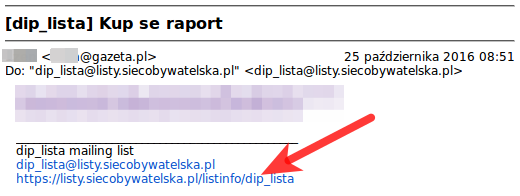Prawo dostępu¶
Większość funkcji z pośrednictwem strony internetowej wymaga wcześniejszego logowania. Jest to proces nieskomplikowany i szczegółowo przedstawiony. Tylko po przeprowadzeniu logowania użytkownik ma prawo dostepu do niektórych treści, albo zmieniania swoich danych. Proces ten wymaga wcześniejszego zapisania na listę dyskusyjną i znajomości hasła.
Przypomnienie hasła¶
W momencie dodawania nowego uczestnika listy dyskusyjnej automatycznie jest nadawane dla niego hasło. Jeżeli nie znasz tego hasła lub nie pamiętasz go możesz przeprowadzić procedurę przypominania hasła.
Aby przypomnieć hasło należy przejść do sekcji informacyjnej właściwej dla danej listy dyskusyjnej np. listy.siecobywatelska.pl/listinfo/dip_lista, a następnie skorzystać z formularza na dole strony:
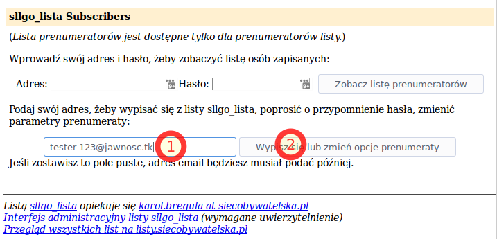Pojawi się nam strona “opcje prenumeratora” na której należy wybrać przycisk “Przypomnij” w sekcji “Przypomnienie hasła”:

W górnej części strony pojawi się komunikat informujacy o wysłaniu hasła za pośrednictwem poczty elektronicznej na wskazany w formularzu adres:
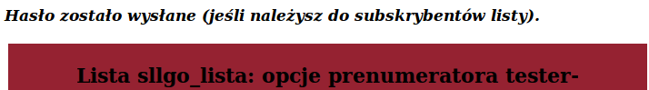Ostrzeżenie
Jeżeli nie otrzymujesz wiadomości z hasłem zweryfikuj czy podany przez Ciebie adres e-mail jest tym, którego używasz na liście dyskusyjnej.
Wiadomość zawiera hasło niezbędne do zalogowania w dalszych etapach:
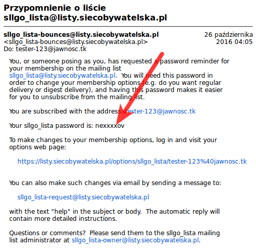Lista uczestników¶
W przypadku większości list dyskusyjnych z powodu m. in. ochrony przed spamem lista adresów e-mail uczestników nie jest publicznie dostępna. Wymagane jest wypełnienie odpowiedniego fomularza z podaniem Twojego e-maila uczestnika listy i Twojego hasła w sekcji informacyjnej właściwej dla danej listy dyskusyjnej np. listy.siecobywatelska.pl/listinfo/dip_lista :
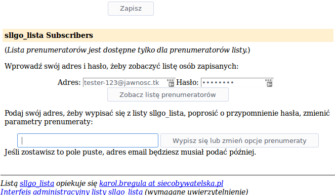Informacja
Jeżeli nie znasz swoje hasła - przejdź do rozdziału Przypomnienie hasła.
Sytuacja ta stanowi - w niektórych przypadkach - także element zapewnienie prywatności dla uczestników list dyskusyjnych. Możliwość rozpowszechniania wiedzy o członkach listy wynika z polityki danej listy dyskusyjnej. Aby uzyskać wiedzę czy jest to postępowanie akceptowane skontaktuj się z opiekunem listy dyskusyjnej wskazanym w stopce.
Ustawienia¶
Jeżeli jesteś zainteresowany zmianą sposobu działania listy dyskusyjnej, sposobem dostarczania wiadomości lub chcesz zaktualizować swój adres e-mail powinieneś skorzystać z ustawień. Aby do nich się dostać wymagane jest wypełnienie odpowiedniego fomularza z podaniem Twojego adresu e-mail uczestnika listy w sekcji informacyjnej danej listy dyskusyjnej np. listy.siecobywatelska.pl/listinfo/dip_lista :
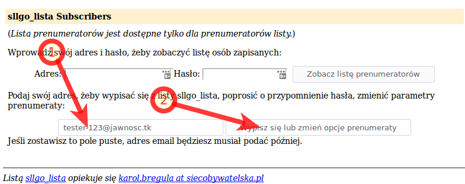Następnie konieczne jest podanie Twojego hasła i wybranie przycisku “Zaloguj”:
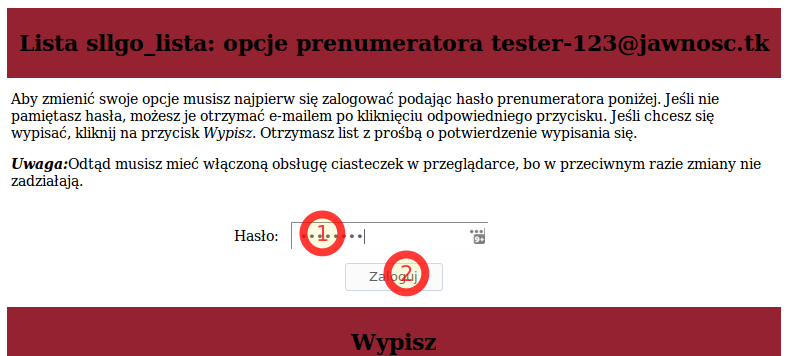Informacja
Jeżeli nie znasz swoje hasła - przejdź do rozdziału Przypomnienie hasła.
W ten sposób uzyskałeś dostęp do sekcji ustawień, która zapewnia możliwość m. in. aktualizacji adresu e-mail (zob. Aktualizacja adresu e-mail) lub wypisanie z listy dyskusyjnej (zob. Wypisanie z listy dyskusyjnej). Pamiętaj, aby po skończonej pracy wylogować się:
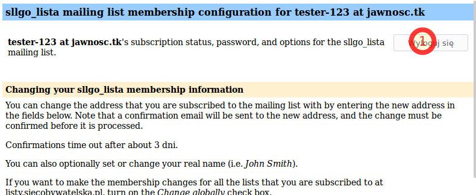Aktualizacja adresu e-mail¶
Po zalogowaniu do sekcji ustawień masz możliwość aktualizacji adresu e-mail. Procedura logowania do sekcji ustawień danej listy została przedstawiona w rozdziale “Ustawienia”. Zmiana adresu e-mail jest możliwa poprzez wprowadzenie nowego adresu e-mail w dostępnym w tej sekcji formularzu:
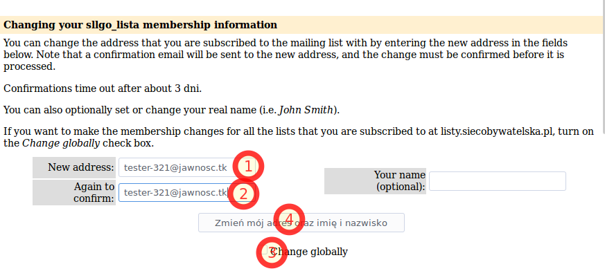Jeżeli chcesz zaktualizować adres e-mail na wszystkich listach dyskusyjnych w ramach strony listy.siecobywatelska.pl zaznacz pole “Change globally”, które jest oznaczone na rysunku numerem 3. Jest to nieobowiązkowe. Na różnych listach dyskusyjnych możesz używać różnych adresów e-mail.
Po zatwierdzeniu formularza zostanie wyświetlony komunikat o wysłaniu potwierdzenia:
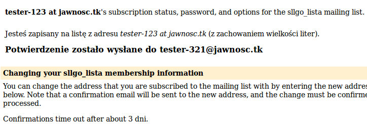Następnie otrzymasz na podany adres e-mail wiadomość z linkiem, w który należy wejść. Jest to niezbędne, aby potwierdzić zmianę i zweryfikować podany adres e-mail. Przykładowa treść wiadomości z odnośnikiem jest następująca:
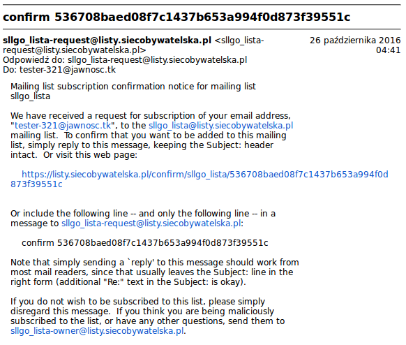Wypisanie z listy dyskusyjnej¶
Istnieje kilka metod wypisania z list dyskusyjnych. Jednak najprostsza polega na wykorzystaniu ustawień listy dyskusyjnej. Należy zalogować się do ustawień listy dyskusyjnej zgodnie z rozdziałem Ustawienia . Następnie skorzystać z odpowiedniego formularza:
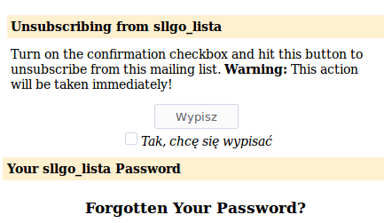Po zatwierdzeniu formularza uzyskasz potwierdzenie wypisania z danej listy dyskusyjnej:
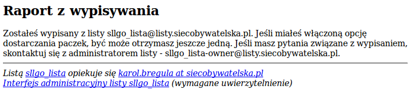Archiwum¶
Każda wiadomość przesłana na listę dyskusyjną jest archiwizowana i dostępna z wykorzystaniem strony internetowej. Umożliwia to m. in. zapoznanie się przez członka listy z wiadomościami nawet za okres sprzed dołączenia do danej listy.
Aby zapoznać się z archiwum należy przejść do sekcji informacyjnej danej listy dyskusyjnej np. listy.siecobywatelska.pl/listinfo/dip_lista , która jest wskazana w stopce każdej wiadomości. Następnie należy przejść do sekcji archiwum:
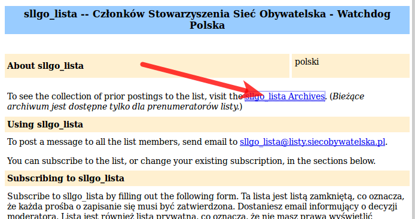Następnie należy wprowadzić swój adres e-mail i hasło, a następnie zatwierdzić formularz:
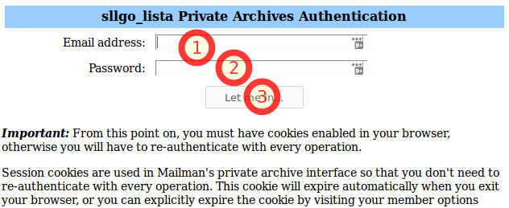Informacja
Jeżeli nie znasz swojego hasła - przejdź do rozdziału Przypomnienie hasła.
W efekcie otrzymasz miesięczne zestawienie wiadomości:
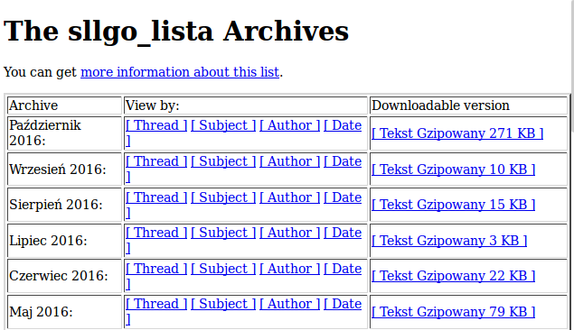